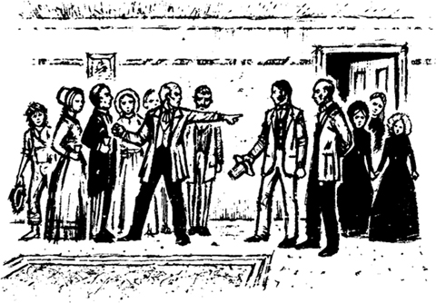
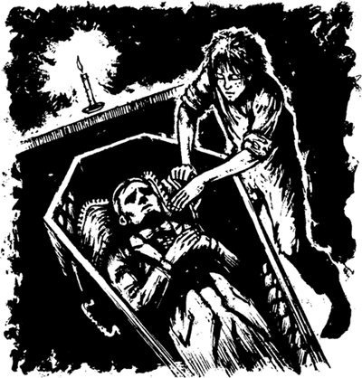
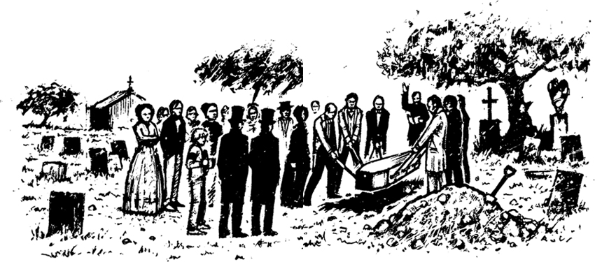

8

Chiếc quan tài
Đến chiều, có thêm một số người hàng xóm đến nhà. Tất cả mọi người rót rượu và nói chuyện về Peter Wilks.
Một trong số những người hàng xóm là bác sĩ của thị trấn.
Nhà vua đang nói về người anh trai已故, Peter của mình. Và ông ấy cũng nói về Chúa. Bác sĩ nghe ông ấy nói một cách cẩn thận. Đột nhiên, ông ấy lớn tiếng nói.
Bác sĩ nói: "Thưa ngài, ngài không biết gì về Chúa! Ngài không phải là một người truyền giáo! Và ngài không phải là người Anh. Giọng của ngài không phải là giọng của người Anh. Ngài là người Mỹ. Ngài không phải là anh trai của Peter Wilks, Harvey. Ngài là một kẻ lừa đảo!"

Những người bạn và hàng xóm của Peter nghe thấy lời nói của bác sĩ. Họ rất ngạc nhiên. Nhưng họ không tin lời bác sĩ. Và cả những người con gái của Peter cũng không tin ông ấy.
Mary Jane nói với bác sĩ: "Ông ấy chính là anh trai của cha tôi! Ông ấy biết tất cả mọi thứ về cuộc đời của cha tôi."
Điều này là sự thật! Tom Collins đã kể cho Nhà vua tất cả mọi thứ về cuộc đời của Peter Wilks.
Bác sĩ rất tức giận và bỏ đi.
Tối hôm đó, Nhà vua và Công tước đi ngủ sớm trong phòng ngủ của họ. Họ mang theo cả túi tiền. Tôi cũng đi về phòng ngủ của mình. Tôi lên giường nhưng không thể ngủ được. Tôi cứ nghĩ về hai kẻ lừa đảo đó.
Tôi nghĩ: "Tôi sẽ không giúp chúng đâu. Chúng muốn lấy đi 6000 đô la của những cô gái này. Những cô gái này sẽ chẳng còn gì cả. Họ sẽ phải rời khỏi nhà của mình. Tôi sẽ phải làm gì?"
Tôi suy nghĩ một lúc. Rồi tôi nảy ra một ý tưởng.
Tôi nghĩ: "Tôi sẽ lấy túi tiền và giấu đi. Nhà vua và Công tước sẽ không tìm thấy nó đâu. Chúng ta sẽ sớm rời khỏi thị trấn này. Sau đó, tôi sẽ viết thư cho Mary Jane. Tôi sẽ kể cho cô ấy nghe về chỗ giấu tiền."
Đây là một kế hoạch hay. Tôi không muốn dính líu đến bất kỳ thẩm phán hay luật sư nào. Và tôi cũng không muốn quân lính da trắng bắt được Jim. Nhưng tôi muốn Mary Jane có được số tiền của cha cô ấy.
Tôi xuống giường và lặng lẽ đến phòng ngủ của những kẻ lừa đảo. Nhà vua và Công tước đã uống rất nhiều rượu. Họ không thức dậy.
Sau một lúc, tôi tìm thấy túi tiền trong một tủ đựng thức ăn. Tôi nhanh chóng rời khỏi căn phòng cùng với nó.
Tôi tự hỏi: "Mình sẽ giấu tiền ở đâu? Mình có nên chôn nó xuống đất không?"
Tôi đi xuống cầu thang. Nhưng đột nhiên tôi nghe thấy tiếng động. Có ai đó đang đi xuống cầu thang đằng sau tôi.
Tôi chạy vào phòng ăn. Tôi nhìn quanh phòng để tìm chỗ trốn. Không có chỗ nào để tôi trốn nhưng lại có một chỗ để giấu tiền. Tôi giấu túi tiền trong quan tài, dưới thi thể của Peter Wilks!

Một lát sau, Mary Jane bước vào phòng.
Cô ấy hỏi tôi: "Cậu đang làm gì ở đây vậy, Huckleberry?"
Tôi trả lời: "Tớ không ngủ được. Nhưng giờ tớ sẽ trở về giường đây. Chúc ngủ ngon nhé, cô Mary Jane."
Tôi trở về phòng ngủ của mình.
Tôi tự nói với mình: "Mình sẽ dậy sau. Mình sẽ tìm một chỗ khác để giấu tiền."
Nhưng tôi rất mệt. Chẳng mấy chốc, tôi đã ngủ thiếp đi.
Sáng hôm sau, tôi thức dậy muộn. Tôi nhanh chóng xuống cầu thang và đi vào phòng ăn.
Có ai đó đã đóng nắp quan tài lại! Họ đã cố định nắp quan tài bằng những chiếc đinh vít lớn. Tôi không thể di chuyển nó.
Tôi tự nhủ: "Ôi, không! Bây giờ mình phải làm sao?"
Tôi đi đến phòng khách. Mary Jane đang ở đó. Tôi nói chuyện với cô ấy nhưng không kể với cô ấy về chuyện tiền bạc.
Vài phút sau, Nhà vua và Công tước đi xuống cầu thang. Họ rất tức giận.
Nhà vua nói nhỏ với tôi: "Có ai đó đã đánh cắp túi tiền. Cậu có biết gì về chuyện này không?"
Tôi nói: "Không, cháu không biết gì về chuyện đó. Nhưng trước khi mất, Peter Wilks đã giải phóng nô lệ của mình. Ông Collins đã kể với chúng cháu như vậy. Những người nô lệ đã rời khỏi nhà sáng nay. Họ lên tàu thủy và đi về phía nam. Mary Jane đã kể với cháu như vậy. Họ có lấy trộm tiền không?"
Nhà vua tức giận nói: "Đúng vậy! Những người nô lệ đã lấy trộm tiền! Chúng đã lừa chúng ta!"
Nhà vua nói rất nhiều điều về những người nô lệ. Ông ấy nói rất nhiều điều về tất cả những người nô lệ. Ông ấy đã nói rất nhiều lời rất tệ! Nhà vua và Công tước là những kẻ lừa đảo nhưng họ lại ghét những kẻ lừa đảo khác.
Công tước nói: "Chúng ta không được nói với gia đình Wilks về chuyện này! Chúng ta sẽ nghĩ ra một kế hoạch sau. Tất cả chúng ta hãy đến lễ tang bây giờ."
Không lâu sau, chúng tôi đã ở nghĩa trang của thị trấn. Chúng tôi đứng quanh một ngôi mộ sâu. Tất cả bạn bè và hàng xóm của Peter Wilks đều có mặt ở đó. Ba cô gái thì đang khóc.

Mục sư của thị trấn đã cầu nguyện. Và Nhà vua cũng cầu nguyện nữa. Chúng tôi đã chứng kiến sáu người đàn ông mạnh mẽ đưa quan tài xuống mộ. Sau đó, chúng tôi trở về nhà và bắt đầu ăn uống.
Tôi rất buồn. Tôi lo lắng cho ba cô gái ấy.
Tôi nghĩ: "Nhà vua và Công tước sẽ không ở lại đây nữa. Chúng tôi sẽ trở lại bè vào đêm nay. Vài ngày nữa, chúng tôi sẽ đi rất xa nơi này. Sau đó, tôi sẽ viết thư cho Mary Jane. Tôi sẽ viết rằng: "Số tiền của cha cô nằm cùng với ông trong quan tài." Cô ấy sẽ kể cho hàng xóm của mình về điều đó. Họ sẽ đào quan tài lên khỏi mộ. Sau đó, những cô gái kia sẽ có lại số tiền của cha mình."
Mục lục
- Tiêu đề
- Mục lục
- Lưu ý về tác giả
- Lưu ý về câu chuyện này
- Những nhân vật trong câu chuyện này
- 1. Nhà văn không biết mọi thứ!
- 2. Căn chòi trong rừng
- 3. Hai đứa trẻ bỏ nhà đi
- 4. Trên bè
- 5. Quyết định
- 6. Nhà vua và công tước
- 7. Những kẻ lừa đảo gian xảo
- 8. Cỗ quan tài
- 9. Thêm những người anh em!
- 10. Tom Sawyer
- Bản quyền